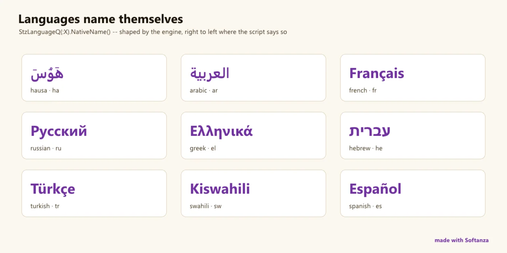

Internationalisation
Un pari délibéré contre ICU : des données larges et une date-heure solide, mais ni collation, ni règles de pluriel, ni fuseaux horaires.
0 Strong · 4 Solid · 4 Partial · 4 Emerging
Mesuré contre : ICU/CLDR · Luxon · Babel · Dossiers : base/i18n · base/culture · base/datetime · Le guide des fonctions de ce domaine

Repensé depuis les premiers principes
Ce que Softanza a gardé de ce qui marche, et ce qu'elle a repensé, tel que la bibliothèque l'a écrit dans ses documents de conception et ses narrations.
La manière SoftanzaUne locale dit comment une valeur s'écrit ; une culture dit comment elle sera lue, et aucun sens ne peut se déduire d'un seul code de locale.
Gardé des meilleures pratiques
- Des identifiants standard : les locales se créent à partir d'étiquettes de langue IETF comme ar-TN, et les devises se repèrent par leur code ISO. source
- L'ISO 8601 pour l'échange de données et les journaux ; l'horloge de 24 heures par défaut, pour la précision et la clarté internationale. source
- La normalisation Unicode dans ses quatre formes standard et la détection d'écriture viennent de la bibliothèque Unicode partagée, pas de tables maison. source
Repensé
- Pas d'ICU : seules les données de locale réellement utilisées sont générées hors ligne et versionnées avec leur source, ce qui évite des dizaines de mégaoctets de dépendance. source
- Une locale met en forme, une culture interprète : un sens comme rouge-égale-perte ne se déduit jamais d'un code de locale, car le rouge signifie le gain dans certaines cultures financières. (prévu) source
- Pas de façade : une opération respecte la culture reçue ou refuse, car ignorer une locale en silence ressemble à un succès et renvoie un texte faux. (prévu) source
- Le temps se modélise, pas seulement se mesure : un seul objet chronologie réunit événements, périodes et zones bloquées, les vérifie à l'insertion et les dessine, au lieu d'outils raboutés. source
A deliberate bet against ICU: rather than vendor tens of MB of C++ and CLDR data, Softanza ships broad hand-tables (261 countries, 323 languages, 143 scripts, Qt-sourced), a solid engine-backed datetime core with rich Haro-side formatting, and a distinctive business/holiday calendar. That same choice leaves the CLDR crown jewels absent: no locale collation, no ICU MessageFormat or plural rules, no translation catalog, no locale-aware number/currency formatting, no timezone database (ToUTC is a no-op), and no non-Gregorian calendars.
Ce qu'un maker en fait, et ce qui se distingue
- Reference tables whose row coverage rivals CLDR (261 countries, 323 languages, 143 scripts)
- A business/holiday calendar with sprint and capacity planning that most i18n libraries lack
- An engine-backed datetime core with validated construction
- Natural-language epoch parsing (FromNaturalEpoch)
Ce qui est dû
- A timezone database (IANA/Olson zones, offset math, DST)
- Locale-aware number and currency formatting over the hint tables that already ship
- Fix the datetime / date / calendar / currency C22 test-runner collision (~450 assertions)
- Locale-aware collation, CLDR plural rules and a translation catalog
La manière Softanza, exécutée
Ce que Softanza fait autrement dans ce domaine, montré par du code tiré de ses narrations et de ses gardes, et exécuté pour cette page.
Une locale connaît à la fois le code ISO de sa devise et le signe qu'on écrit vraiment, tirés d'une seule table du moteur.
oFr = new stzLocale("fr_FR")
Then("the ISO code is the ISO code", oFr.CurrencyISOSymbol(), "EUR")
Then("...and the symbol is the euro sign", oFr.CurrencySymbol(), "€")THEN the ISO code is the ISO code [PASS] THEN ...and the symbol is the euro sign [PASS]
exécuté le 2026-10-01 21:17 dans la bibliothèque au commit 0e72e2e2c ; tiré de base/test/locale/02_currencysymbol_narrated.ring
Une locale iranienne commence la semaine le samedi et nomme ce jour en persan.
oFa = new stzLocale("fa_IR")
Then("the language itself resolves", oFa.LanguageName(), "persian")
Then("...and its first day is Saturday, as Iran counts it", oFa.NthDayOfWeek(1), "saturday")
Then("...named in Persian, not English", oFa.NativeNthDayOfWeek(1), "شنبه")THEN the language itself resolves [PASS] THEN ...and its first day is Saturday, as Iran counts it [PASS] THEN ...named in Persian, not English [PASS]
exécuté le 2026-10-01 21:17 dans la bibliothèque au commit 0e72e2e2c ; tiré de base/test/locale/01_languagename_narrated.ring
Une chronologie refuse un événement placé dans une période de maintenance bloquée, dès qu'on l'ajoute.
oTimeline = new stzTimeLine("2024-01-01", "2024-12-31")
oTimeline.AddBlockedSpan("MAINTENANCE", "2024-06-15 09:00:00", "2024-06-15 17:00:00")
oTimeline.AddPoint("EVENT1", "2024-06-15 08:00:00") # OK
oTimeline.AddPoint("EVENT2", "2024-06-15 12:00:00") # Error: blockedPoint 'EVENT2' falls within a blocked span or blocked point
exécuté le 2026-10-01 21:17 dans la bibliothèque au commit 0e72e2e2c ; tiré de base/test/timeline/47_simple_blocked_maintenance_period.ring
Les couloirs, un par un
Les couloirs et leurs notes sont cités tels qu'ils ont été lus à la source, le Read from the source on 2026-09-16.